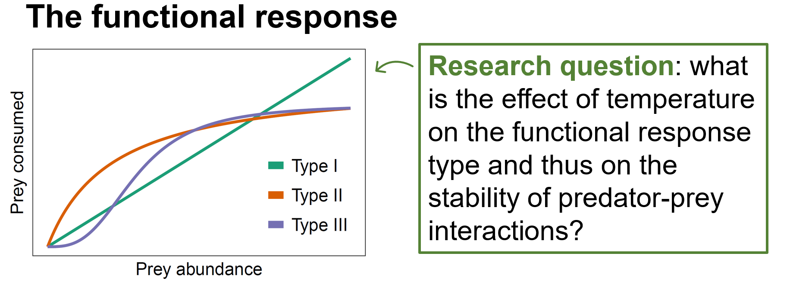
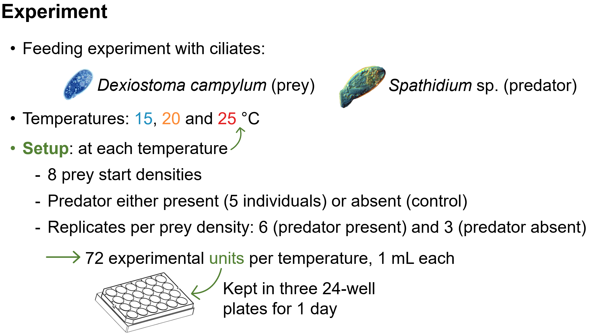
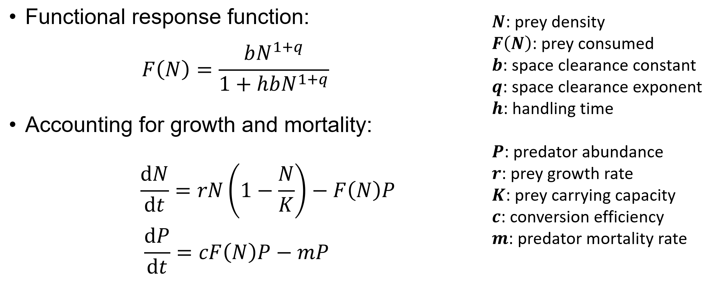
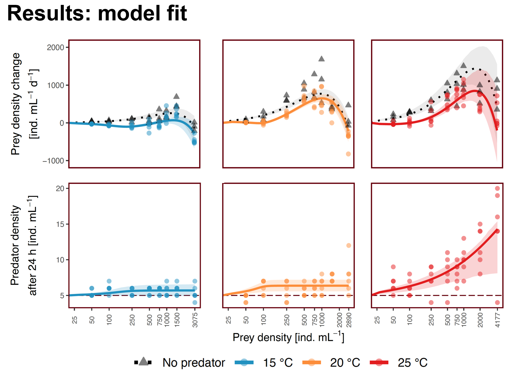
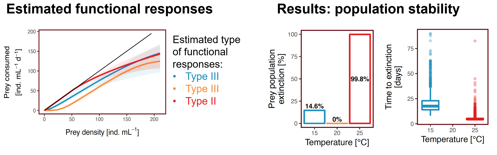

Does warming reshape the way predators eat their prey?
The functional response describes how much prey a single predator consumes as prey density rises. Its shape (Type I, II or III) sets whether the interaction is stabilising or destabilising. We asked whether a few degrees of warming can change that shape.
A ciliate pair, 24 hours, three temperatures
We chose Spathidium sp., a generalist ciliate predator, and its preferred prey Dexiostoma campylum.

We recorded both species over 24 hours at 15°, 20° and 25 °C, across a gradient of starting prey densities, so the functional response could be reconstructed at each temperature.

We then fit a population-dynamic model that explicitly contains the predator's functional response. That gave us space clearance rate, handling time and density dependence at each temperature, plus the predator's conversion efficiency.

Type III at 15 and 20 °C, Type II at 25 °C
At the two cooler temperatures the functional response was Type III: it accelerates at low prey densities, which gives prey a refuge when rare. At 25 °C the response switched to Type II, with no acceleration phase.


Conversion efficiency also increased with warming, compounding the destabilising effect.
Shape changes are usually missing from food-web models
Most climate-change food-web models hold the type of the functional response fixed and only let temperature scale its parameters. The type itself can change, with consequences that scaling alone will not capture. Future work should investigate how often this happens, and how it propagates through multi-species food webs.